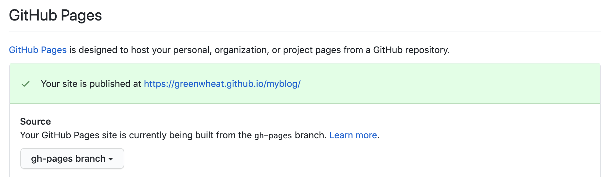
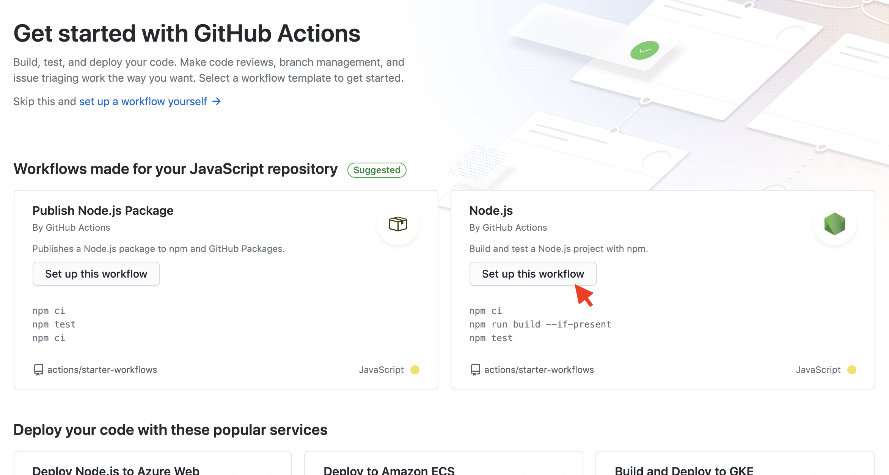

使用 Gitbook 和 github-pages 构建博客
希望达到的效果
- 目录文件
SUMMARY.md能自动生成 - md 文件更新交上传仓库 master 分支后，能自动编译部署到 gh-pages 分支
- 主题自定义优化
自动生成目录结构并写入SUMMARY.md
生成目录
function getDirMap(filepath, depth = 0) {
let result = {};
result.path = filepath;
result.name = path.basename(filepath);
// 目录的层级深度
result.depth = depth;
const stats = fs.statSync(filepath);
if (stats.isFile()) {
result.type = "file";
return result;
}
// 子文件夹需要递归遍历
result.type = "directory";
const dirs = fs.readdirSync(filepath);
// 排除一些不需要生成目录的文件和文件夹
dirs = dirs.filter(
dir =>
[".DS_Store", "_book", "SUMMARY.md", "assets"].indexOf(
path.basename(dir)
) < 0
);
result.children = dirs.map(dir => {
return getDirMap(path.join(filepath, dir), depth + 1);
});
return result;
}
let dirMap = {};
dirMap = getDirMap("doc");
console.log(JSON.stringify(dirMap));
来试验下结果：
node config/summary-generate.js
打印结果如下（点击展开）:
```json { "path": "doc", "name": "doc", "depth": 0, "type": "directory", "children": [ { "path": "doc/01-JavaScript基础（ES5、ES6）", "name": "01-JavaScript基础（ES5、ES6）", "depth": 1, "type": "directory", "children": [ { "path": "doc/01-JavaScript基础（ES5、ES6）/Array.md", "name": "Array.md", "depth": 2, "type": "file" }, { "path": "doc/01-JavaScript基础（ES5、ES6）/继承、封装、多态.md", "name": "继承、封装、多态.md", "depth": 2, "type": "file" }, { "path": "doc/01-JavaScript基础（ES5、ES6）/预解释、作用域、闭包、this.md", "name": "预解释、作用域、闭包、this.md", "depth": 2, "type": "file" } ] }, { "path": "doc/02-TypeScript", "name": "02-TypeScript", "depth": 1, "type": "directory", "children": [ { "path": "doc/02-TypeScript/基本语法.md", "name": "基本语法.md", "depth": 2, "type": "file" } ] }, { "path": "doc/03-Node", "name": "03-Node", "depth": 1, "type": "directory", "children": [ { "path": "doc/03-Node/fs.md", "name": "fs.md", "depth": 2, "type": "file" }, { "path": "doc/03-Node/path.md", "name": "path.md", "depth": 2, "type": "file" }, { "path": "doc/03-Node/语义版本控制.md", "name": "语义版本控制.md", "depth": 2, "type": "file" } ] }, { "path": "doc/04-工程化实践", "name": "04-工程化实践", "depth": 1, "type": "directory", "children": [ { "path": "doc/04-工程化实践/3个环境.md", "name": "3个环境.md", "depth": 2, "type": "file" }, { "path": "doc/04-工程化实践/Git.md", "name": "Git.md", "depth": 2, "type": "file" }, { "path": "doc/04-工程化实践/Linux.md", "name": "Linux.md", "depth": 2, "type": "file" }, { "path": "doc/04-工程化实践/docker.md", "name": "docker.md", "depth": 2, "type": "file" } ] }, { "path": "doc/05-技术广度", "name": "05-技术广度", "depth": 1, "type": "directory", "children": [ { "path": "doc/05-技术广度/ruby.md", "name": "ruby.md", "depth": 2, "type": "file" } ] }, { "path": "doc/06-前端工具类", "name": "06-前端工具类", "depth": 1, "type": "directory", "children": [ { "path": "doc/06-前端工具类/Mac相关.md", "name": "Mac相关.md", "depth": 2, "type": "file" }, { "path": "doc/06-前端工具类/VSCode.md", "name": "VSCode.md", "depth": 2, "type": "file" }, { "path": "doc/06-前端工具类/静态页面and文档生成工具.md", "name": "静态页面and文档生成工具.md", "depth": 2, "type": "file" } ] }, { "path": "doc/07-笔记", "name": "07-笔记", "depth": 1, "type": "directory", "children": [ { "path": "doc/07-笔记/使用Gitbook和github-pages构建博客.md", "name": "使用Gitbook和github-pages构建博客.md", "depth": 2, "type": "file" }, { "path": "doc/07-笔记/如何把json数据转化为demo.json并下载文件.md", "name": "如何把json数据转化为demo.json并下载文件.md", "depth": 2, "type": "file" } ] }, { "path": "doc/README.md", "name": "README.md", "depth": 1, "type": "file" } ] } ```写入SUMMARY.md
根据SUMMARY.md的结构，写入就是递归遍历生成的目录即可，层次结构中的缩进可以通过" ".repeat(+(depth - 1))计算缩进量。
if (type === "directory") {
result = `${" ".repeat(+(depth - 1))}* ${title}`;
} else if (type === "file") {
result = `${" ".repeat(+(depth - 1))}* [${title}](./${path.replace(
/\bdoc\//,
""
)})`;
}
使用 github 的 Actions 实现 gh-pages 自动发布
实现目标：
master分支存放开发代码和 md 文件；gh-pages分支存放编译后的 html 文件；- 通过
gh-pages发布博客； - 希望在
master分支代码有更新（例如push、pull-request等）时，可以自动编译并将结果推送到gh-pages分支上；
gh-pages分支
新建gh-pages分支，并将其设置为github-pages的默认分支(位置：Setting -> Options -> GitHub Pages)；

设置Actions
Actions 是 github 提供的CI/CD（Continuous Integration/Continuous Deployment，持续集成/持续交代、部署）功能。一个.yml文件对应一条workflow，一条workflow中包含多个job，一个job里可以有多个step，一个step中可以配置多个action。github 有很多公开共享的 action，很方便快速上手。
点击仓库的Action面板，选择一种默认带部署环境的workflow，也可以手动创建新的。这里我选择了推荐的node的。

.yml示例（点击展开）
# This workflow will do a clean install of node dependencies, build the source code and run tests across different versions of node
# For more information see: https://help.github.com/actions/language-and-framework-guides/using-nodejs-with-github-actions
name: Node.js CI
on:
push:
branches: [master]
pull_request:
branches: [master]
jobs:
build:
runs-on: ubuntu-latest
strategy:
matrix:
node-version: [10.x]
steps:
- uses: actions/checkout@v2
- name: Use Node.js $NaN
uses: actions/setup-node@v1
with:
node-version: $NaN
- run: |
npm install
npm install -g gitbook-cli
node config/summary-generate.js
gitbook build doc _book
- name: Deploy to GitHub Pages
if: success()
uses: crazy-max/ghaction-github-pages@v2
with:
target_branch: gh-pages
build_dir: _book
env:
GITHUB_TOKEN: $